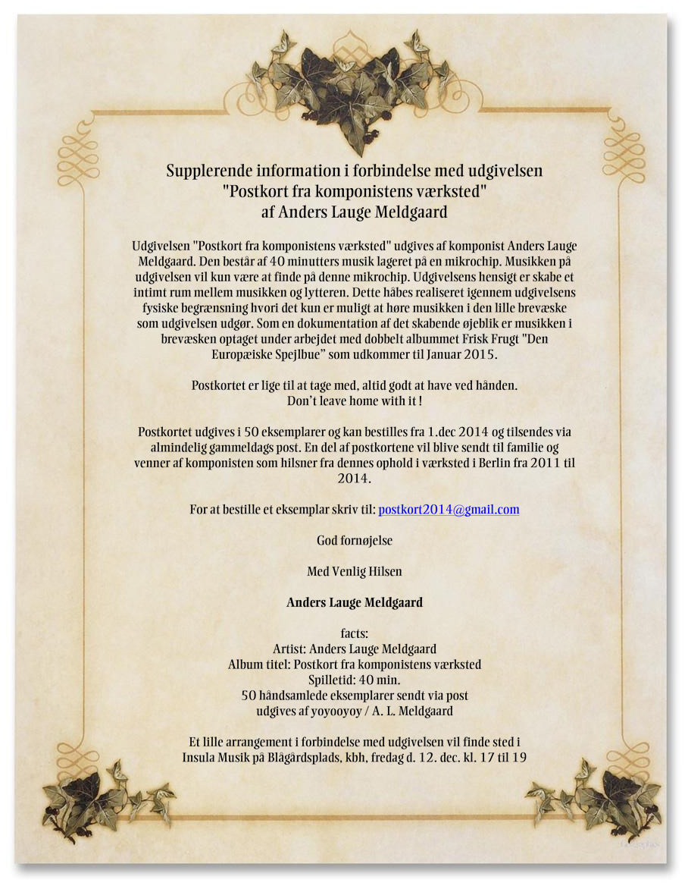
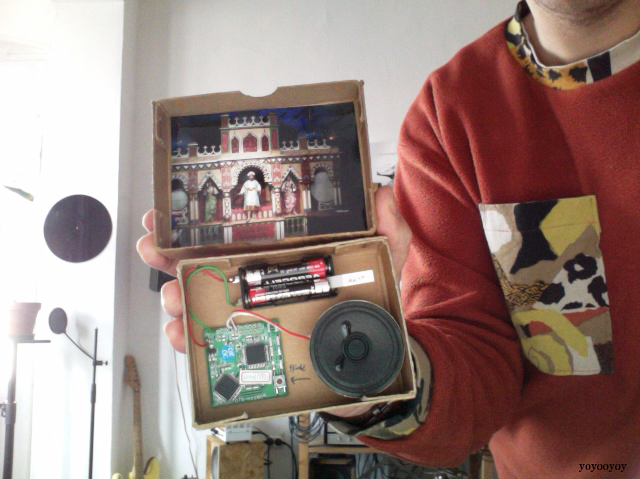
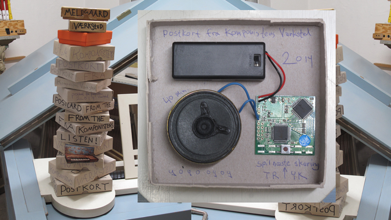

Postkort fra komponistens værksted · 2014
Skitser, outtakes, m.m. 40 min musik i alt udgivet i begrænset oplag som postkort.
Tekst om postkortet af Simon Christensen fra Passive/aggressive.dk :
Alt imens Frisk Frugt udsender sin tredje LP, “Den Europæiske Spejlbue”, har Anders Lauge Meldgaard i al stilfærdighed udsendt et modspejl i form af “Postkort fra komponistens værksted” – 40 minutters musik af Anders Lauge Meldgaard med skitser, b-sider og outtakes til den nye LP. Udgivelsen kommer som et postkort på en hjemmelavet papboks i dimensionerne 12x12x2 cm med et batteri, en højttaler og et mini-motherboard samt håndskrevne instrukser.
Ekstraudgivelser som denne er langtfra fremmede for Anders Lauge Meldgaard, der ud over sit virke med Frisk Frugt udfolder sig som et helt musikalsk menneske ved både at være musikantropolog, instrumentbygger, komponist (grafisk notation), producer og medgrundlægger af Yoyooyoy, der i starten netop udgav musik på kryds og tværs på cd-r. Under navnet Supermelle har Meldgaard fx. udsendt bånd med feltoptagelser fra Burkina Faso og Mali før udgivelsen af “Dansktoppen møder Burkina Faso i det himmelblå rum hvor solen bor”; i forbindelse med Musik for Seks Elektriske Guitarer udgav Jvtlandt samtidig et firedobbelt kassettebånd med outtakes og Supermelle “The Japan Collage”; og i 2012 udgav han to mixtapes med titlerne “New Ways of Organizing Sound and Energy Studies, vol. 1+2”.
Med “Postkort” kommer man igen videre ind i den åbne musikforståelse, som Anders Lauge Meldgaard repræsenterer med en masse små melodiske skitser for orgel, synthesizer, percussion, saxofon, akustisk guitar og sang, samt alternative tidlige versioner fra tilblivelsen af “Den Europæiske Spejlbue”. Lydkvaliteten er virkeligt sparsom og lo-fi, og navigationen er begrænset til en power- og next track-knap. Men til gengæld får man ret ekstreme og udkogte musikeksempler, der viser, hvor langt ud i europæisk folkemusik, orgelmusik, dronerne og den hvide mands funk Meldgaard har bevæget sig de sidste par år.
se på passive/agressive.dk

